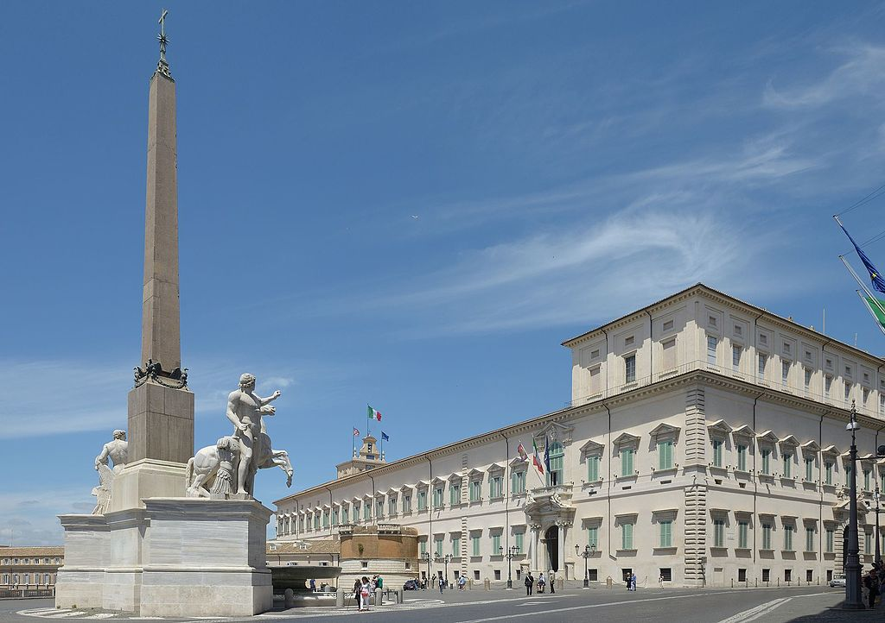

Nuevo país pendiente, ¿Cual será?
Publicado: 14 Marzo 19Cual será es país que se realizara después de la llegada de europa...
Leer más>>Cuento mis historias de mis viajes más impresionantes
| Características | |
|---|---|
| Nombre: | Roma |
| País: | Italia |
| Población: | 59,6M hab |
Bueno como ya sabéis aun sigo deseando ir a este país mi querida italia, que la verdad tiene un reconocimiento muy turístico y patrimonial considerado uno de los mejores países de europa para los turistas.Y os voy a dejar esta información valiosa del país, y espero en cuando llegue ahi, hare mis primeras impresiones
Italia se ubica en el centro del mar Mediterráneo , en Europa del Sur . Pertenecen a Italia la península itálica, el valle del Po y dos de las mayores islas en el mar Mediterráneo: Sicilia y Cerdeña, además de islas en el Adriático (Tremiti) y norte de África (Pelagias). En el norte Italia está rodeada por los Alpes y tiene frontera con Francia, Suiza, Austria, y Eslovenia. Los Estados independientes de San Marino y Ciudad del Vaticano son enclaves dentro del territorio italiano. A su vez, Campione d'Italia es un municipio italiano que forma un pequeño enclave en territorio suizo.
Ha sido el hogar de muchas culturas europeas como la civilización de Nuraga, los etruscos, los griegos, los romanos y también fue la cuna del Humanismo y del Renacimiento, que comenzó en la región de Toscana y pronto se extendió por toda Europa.
La capital de Italia, Roma, ha sido durante siglos el centro político y cultural de la civilización occidental. Además, es la ciudad santa para la Iglesia católica, pues dentro de la ciudad se encuentra el microestado del Vaticano. El significado cultural del país se refleja en todos sus Patrimonios de la Humanidad, ya que tiene 54, el país con mayor número del mundo

Es el tercer país de la Unión Europea que más turistas recibe por año, siendo Roma la tercera ciudad más visitada.9 Otras ciudades importantes son: Milán, centro de finanzas y de industria, y, según el Global Language Monitor, la capital de la Moda;10 Nápoles, importante puerto en el Mediterráneo, capital histórica y ciudad más poblada del Mezzogiorno;11 Turín, centro de industria automovilística y de diseño industrial. Italia es una república democrática, forma parte del G7 o grupo de las siete más grandes naciones avanzadas del mundo y es un país desarrollado con una calidad de vida alta, encontrándose en 2005 entre las siete primeras del mundo
Cual será es país que se realizara después de la llegada de europa...
Leer más>>Como podeis haber notado ya la pagina tiene un nuevo look...
Leer más>>